!apt-get -qq install -y fonts-nanum > /dev/null6. 실제 데이터 실습: 2026 교정통계연보
이 장에서는 법무부가 공개한 『2026 교정통계연보』의 표를 그대로 옮긴 자료로, 1~5장에서 배운 방법을 실제 숫자에 적용합니다. 수용률 계산 함수, 병합, 반복문, 증가율, 그래프를 다시 씁니다.
6.1 자료 소개
| 파일 | 연보 표 | 쪽 | 내용 |
|---|---|---|---|
capacity_1991_2025.csv |
표Ⅱ-13 | 120~121 | 연도별 수용정원, 1일 평균 수용인원, 수용률 (35행) |
staff_2016_2025.csv |
표Ⅰ-15 | 38 | 교정공무원 정원, 현원 (10행) |
offense_2016_2025.csv |
표Ⅱ-9 | 110 | 수형자 죄명별 인원 (10행) |
age_2016_2025.csv |
표Ⅱ-8 | 108 | 수형자 연령별 인원 (10행) |
출처: 이 자료는 『2026 교정통계연보』(법무부 교정본부, 2026) 38쪽, 108쪽, 110쪽, 120~121쪽에서 전재하였습니다. 원문은 교정본부 누리집(www.corrections.go.kr) 알림마당 > 교정통계연보에서 내려받을 수 있습니다.
PDF의 표를 CSV로 옮긴 뒤, 표 안의 합계가 맞는지(예: 죄명별 인원의 합 = 계)를 모두 확인했습니다. 실무에서 PDF나 한글 파일의 표를 옮겨 쓸 때도 이런 확인을 먼저 합니다.
6.2 준비
import pandas as pd
import matplotlib.pyplot as plt
from matplotlib import font_manager as fm
fm.fontManager.addfont("/usr/share/fonts/truetype/nanum/NanumGothic.ttf")
plt.rcParams["font.family"] = "NanumGothic"
plt.rcParams["axes.unicode_minus"] = False
주소 = "https://raw.githubusercontent.com/StatJeong/moj-python-lecture/main/data/yearbook/"
수용 = pd.read_csv(주소 + "capacity_1991_2025.csv")
직원 = pd.read_csv(주소 + "staff_2016_2025.csv")
죄명 = pd.read_csv(주소 + "offense_2016_2025.csv")
연령 = pd.read_csv(주소 + "age_2016_2025.csv")6.3 수용률 35년 추이
수용.head()| 연도 | 수용정원 | 1일평균수용인원 | 수용률 | |
|---|---|---|---|---|
| 0 | 1991 | 54300 | 55123 | 101.5 |
| 1 | 1992 | 55300 | 55159 | 99.7 |
| 2 | 1993 | 55300 | 59145 | 107.0 |
| 3 | 1994 | 55800 | 58188 | 104.3 |
| 4 | 1995 | 55800 | 60166 | 107.8 |
수용.tail()| 연도 | 수용정원 | 1일평균수용인원 | 수용률 | |
|---|---|---|---|---|
| 30 | 2021 | 48980 | 52368 | 106.9 |
| 31 | 2022 | 48990 | 51117 | 104.3 |
| 32 | 2023 | 49922 | 56577 | 113.3 |
| 33 | 2024 | 50250 | 61366 | 122.1 |
| 34 | 2025 | 50614 | 63680 | 125.8 |
연보의 수용률을 직접 다시 계산하기
1장에서 만든 수용률 함수로 35년치 수용률을 다시 계산하고, 연보에 적힌 값과 같은지 확인합니다. 함수에 열을 통째로 넣으면 모든 행이 한 번에 계산됩니다.
def 수용률계산(현원, 정원):
return round(현원 / 정원 * 100, 1)
수용["수용률_계산"] = 수용률계산(수용["1일평균수용인원"], 수용["수용정원"])
수용[["연도", "수용률", "수용률_계산"]].tail()| 연도 | 수용률 | 수용률_계산 | |
|---|---|---|---|
| 30 | 2021 | 106.9 | 106.9 |
| 31 | 2022 | 104.3 | 104.3 |
| 32 | 2023 | 113.3 | 113.3 |
| 33 | 2024 | 122.1 | 122.1 |
| 34 | 2025 | 125.8 | 125.8 |
다시 계산한 값과 연보의 값이 다른 행만 골라냅니다(2장 2.4절의 조건 고르기).
수용[수용["수용률_계산"] != 수용["수용률"]]| 연도 | 수용정원 | 1일평균수용인원 | 수용률 | 수용률_계산 |
|---|
빈 표가 나왔으므로 35개 연도 모두 같습니다. 공개된 통계라도 이렇게 한 번 다시 계산해 보면, 자료를 옮기다 생긴 실수나 정의의 차이를 찾을 수 있습니다.
가장 높았던 해, 정원 이내였던 해
수용.sort_values("수용률", ascending=False).head(1)| 연도 | 수용정원 | 1일평균수용인원 | 수용률 | 수용률_계산 | |
|---|---|---|---|---|---|
| 12 | 2003 | 44350 | 58945 | 132.9 | 132.9 |
수용[수용["수용률"] < 100][["연도", "수용정원", "1일평균수용인원", "수용률"]]| 연도 | 수용정원 | 1일평균수용인원 | 수용률 | |
|---|---|---|---|---|
| 1 | 1992 | 55300 | 55159 | 99.7 |
| 15 | 2006 | 47390 | 46721 | 98.6 |
| 21 | 2012 | 45690 | 45488 | 99.6 |
수용률이 큰 순서로 정렬해 첫 행만 보았습니다(2장 2.5절). 35년 동안 수용률이 100% 아래였던 해는 1992년, 2006년, 2012년 세 해뿐입니다.
그래프로 보기
plt.figure(figsize=(8, 4))
plt.plot(수용["연도"], 수용["수용률"], marker="o")
plt.axhline(100, color="gray", linestyle="--")
plt.title("교정시설 수용률 (1991~2025년)")
plt.xlabel("연도")
plt.ylabel("수용률(%)")
plt.show()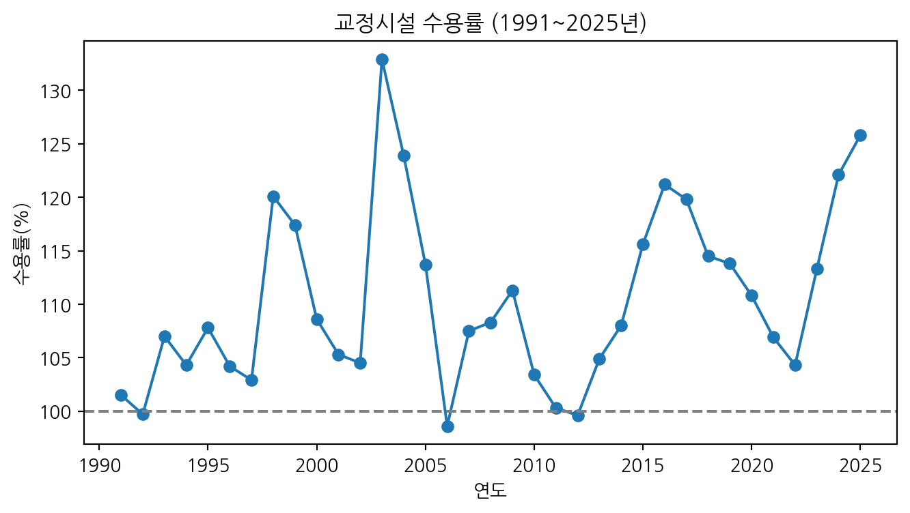
수용률이 가장 높았던 해는 2003년(132.9%)인데, 1일 평균 수용인원이 가장 많았던 해는 1999년(68,087명)입니다. 정원과 수용인원을 함께 그려 보면 이유가 보입니다.
plt.figure(figsize=(8, 4))
plt.plot(수용["연도"], 수용["수용정원"], label="수용정원")
plt.plot(수용["연도"], 수용["1일평균수용인원"], label="1일 평균 수용인원")
plt.axvline(2003, color="gray", linestyle=":")
plt.title("수용정원과 1일 평균 수용인원 (1991~2025년)")
plt.xlabel("연도")
plt.ylabel("인원(명)")
plt.legend()
plt.show()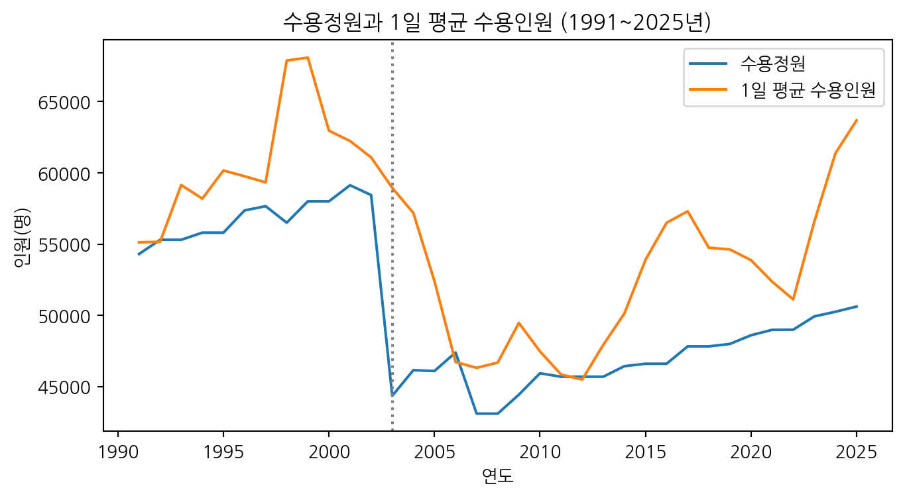
2003년에 수용인원은 조금 줄었는데 정원이 58,440명에서 44,350명으로 크게 줄었습니다. 연보(121쪽)에 따르면 2002년 12월 「법무시설기준규칙」의 혼거실 1인당 수용면적 기준이 1.65㎡에서 2.48㎡로 넓어졌기 때문입니다. 수용률의 분모인 정원의 기준이 바뀌었으므로, 2003년 전후의 수용률은 같은 잣대로 비교하기 어렵습니다. 숫자를 비교하기 전에 그 숫자의 정의가 바뀐 적이 있는지 확인해야 합니다.
6.4 교정공무원 1인당 수용인원 (병합)
직원| 연도 | 정원 | 현원 | 남성현원 | 여성현원 | |
|---|---|---|---|---|---|
| 0 | 2016 | 15841 | 15727 | 14387 | 1340 |
| 1 | 2017 | 15871 | 15819 | 14451 | 1368 |
| 2 | 2018 | 15999 | 15905 | 14548 | 1357 |
| 3 | 2019 | 16101 | 16176 | 14795 | 1381 |
| 4 | 2020 | 16482 | 15911 | 14495 | 1416 |
| 5 | 2021 | 16652 | 16278 | 14824 | 1454 |
| 6 | 2022 | 16808 | 16331 | 14813 | 1518 |
| 7 | 2023 | 16776 | 16677 | 15057 | 1620 |
| 8 | 2024 | 16716 | 16647 | 15004 | 1643 |
| 9 | 2025 | 16762 | 16754 | 15029 | 1725 |
수용 표와 직원 표를 연도 기준으로 합칩니다.
합친표 = pd.merge(수용, 직원, on="연도")
합친표["1인당수용인원"] = (합친표["1일평균수용인원"] / 합친표["현원"]).round(2)
합친표[["연도", "1일평균수용인원", "현원", "1인당수용인원"]]| 연도 | 1일평균수용인원 | 현원 | 1인당수용인원 | |
|---|---|---|---|---|
| 0 | 2016 | 56495 | 15727 | 3.59 |
| 1 | 2017 | 57298 | 15819 | 3.62 |
| 2 | 2018 | 54744 | 15905 | 3.44 |
| 3 | 2019 | 54624 | 16176 | 3.38 |
| 4 | 2020 | 53873 | 15911 | 3.39 |
| 5 | 2021 | 52368 | 16278 | 3.22 |
| 6 | 2022 | 51117 | 16331 | 3.13 |
| 7 | 2023 | 56577 | 16677 | 3.39 |
| 8 | 2024 | 61366 | 16647 | 3.69 |
| 9 | 2025 | 63680 | 16754 | 3.80 |
수용 표는 35행인데 합친 결과는 10행입니다. 직원 표에 2016년부터의 값만 있어서, 짝이 없는 1991~2015년은 빠졌습니다(2장 2.11절).
plt.figure(figsize=(7, 4))
plt.plot(합친표["연도"], 합친표["1인당수용인원"], marker="o")
plt.title("교정공무원 1인당 1일 평균 수용인원")
plt.xlabel("연도")
plt.ylabel("명")
plt.show()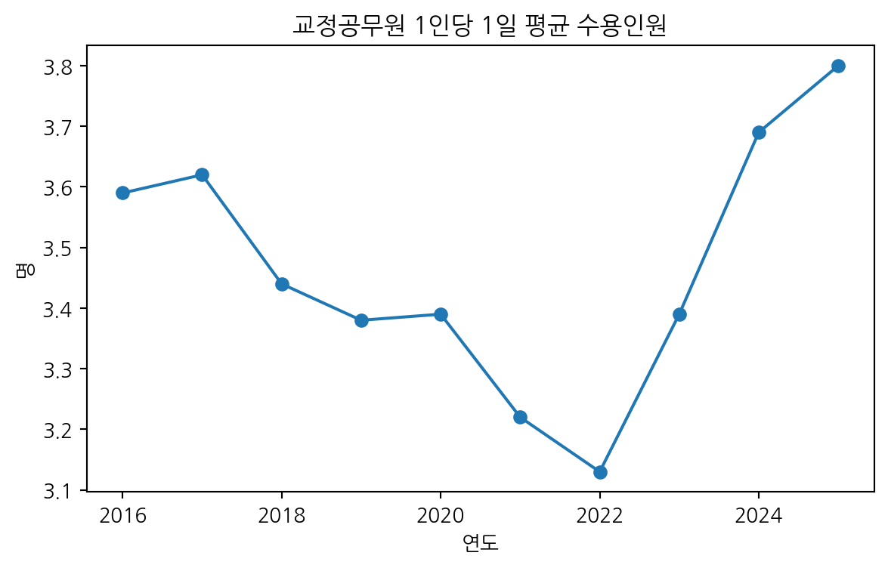
증가율 함수
2016년과 2025년을 비교하는 증가율 함수를 만듭니다. iloc[0]은 첫 행, iloc[-1]은 마지막 행입니다(1장 리스트의 위치와 같은 방식).
def 증가율(처음, 나중):
return round((나중 - 처음) / 처음 * 100, 1)
처음 = 합친표.iloc[0]
나중 = 합친표.iloc[-1]
print("1일 평균 수용인원:", 증가율(처음["1일평균수용인원"], 나중["1일평균수용인원"]), "%")
print("수용정원:", 증가율(처음["수용정원"], 나중["수용정원"]), "%")
print("교정공무원 현원:", 증가율(처음["현원"], 나중["현원"]), "%")1일 평균 수용인원: 12.7 %
수용정원: 8.6 %
교정공무원 현원: 6.5 %2016년부터 2025년까지 1일 평균 수용인원은 12.7% 늘었는데, 수용정원은 8.6%, 교정공무원 현원은 6.5% 늘었습니다. 그래서 1인당 수용인원이 3.59명에서 3.80명으로 늘었습니다. 이 값은 현원 기준이고, 행정·의료 인력까지 모두 포함한 수치입니다.
6.5 죄명별 구성 변화
죄명| 연도 | 계 | 절도 | 폭력행위등처벌법 | 사기횡령 | 성폭력 | 마약류 | 과실범 | 강도 | 살인 | 기타 | |
|---|---|---|---|---|---|---|---|---|---|---|---|
| 0 | 2016 | 36479 | 4061 | 2815 | 7699 | 5953 | 1890 | 1691 | 2552 | 3584 | 6234 |
| 1 | 2017 | 36167 | 3858 | 2624 | 7630 | 5480 | 2133 | 1722 | 2333 | 3484 | 6903 |
| 2 | 2018 | 35271 | 3681 | 2544 | 8028 | 5713 | 1329 | 1894 | 2036 | 3291 | 6755 |
| 3 | 2019 | 34697 | 3549 | 2509 | 8024 | 5717 | 1996 | 1851 | 1919 | 3228 | 5904 |
| 4 | 2020 | 34749 | 3254 | 2330 | 8330 | 5652 | 1595 | 2474 | 1803 | 3170 | 6141 |
| 5 | 2021 | 34087 | 2744 | 2325 | 8323 | 5572 | 1849 | 2590 | 1683 | 3063 | 5938 |
| 6 | 2022 | 34475 | 2667 | 2373 | 8272 | 5720 | 2169 | 2448 | 1519 | 3028 | 6279 |
| 7 | 2023 | 38045 | 2767 | 2720 | 9338 | 5862 | 2492 | 3167 | 1522 | 3002 | 7175 |
| 8 | 2024 | 40954 | 2792 | 2653 | 10051 | 6076 | 3477 | 3445 | 1486 | 3083 | 7891 |
| 9 | 2025 | 43074 | 2727 | 2557 | 10493 | 6021 | 4188 | 3302 | 1440 | 3063 | 9283 |
먼저 옮긴 표가 맞는지 확인합니다. 죄명별 인원을 더하면 ’계’와 같아야 합니다.
죄명목록 = ["절도", "폭력행위등처벌법", "사기횡령", "성폭력", "마약류", "과실범", "강도", "살인", "기타"]
합계 = 0
for 이름 in 죄명목록:
합계 = 합계 + 죄명[이름] # 열끼리 더하면 같은 행(연도)끼리 더해짐
죄명[합계 != 죄명["계"]]| 연도 | 계 | 절도 | 폭력행위등처벌법 | 사기횡령 | 성폭력 | 마약류 | 과실범 | 강도 | 살인 | 기타 |
|---|
1장 1.8절의 누적 반복문과 같은 방식입니다. 0에서 시작해 죄명 열을 하나씩 더하면 연도마다의 합계가 됩니다. ’계’와 다른 행을 골라냈더니 빈 표가 나왔으므로 10개 연도 모두 맞습니다.
구성비
반복문으로 죄명마다 구성비(%)를 계산해 새 표를 만듭니다.
구성비 = pd.DataFrame({"연도": 죄명["연도"]})
for 이름 in 죄명목록:
구성비[이름] = (죄명[이름] / 죄명["계"] * 100).round(1)
구성비| 연도 | 절도 | 폭력행위등처벌법 | 사기횡령 | 성폭력 | 마약류 | 과실범 | 강도 | 살인 | 기타 | |
|---|---|---|---|---|---|---|---|---|---|---|
| 0 | 2016 | 11.1 | 7.7 | 21.1 | 16.3 | 5.2 | 4.6 | 7.0 | 9.8 | 17.1 |
| 1 | 2017 | 10.7 | 7.3 | 21.1 | 15.2 | 5.9 | 4.8 | 6.5 | 9.6 | 19.1 |
| 2 | 2018 | 10.4 | 7.2 | 22.8 | 16.2 | 3.8 | 5.4 | 5.8 | 9.3 | 19.2 |
| 3 | 2019 | 10.2 | 7.2 | 23.1 | 16.5 | 5.8 | 5.3 | 5.5 | 9.3 | 17.0 |
| 4 | 2020 | 9.4 | 6.7 | 24.0 | 16.3 | 4.6 | 7.1 | 5.2 | 9.1 | 17.7 |
| 5 | 2021 | 8.0 | 6.8 | 24.4 | 16.3 | 5.4 | 7.6 | 4.9 | 9.0 | 17.4 |
| 6 | 2022 | 7.7 | 6.9 | 24.0 | 16.6 | 6.3 | 7.1 | 4.4 | 8.8 | 18.2 |
| 7 | 2023 | 7.3 | 7.1 | 24.5 | 15.4 | 6.6 | 8.3 | 4.0 | 7.9 | 18.9 |
| 8 | 2024 | 6.8 | 6.5 | 24.5 | 14.8 | 8.5 | 8.4 | 3.6 | 7.5 | 19.3 |
| 9 | 2025 | 6.3 | 5.9 | 24.4 | 14.0 | 9.7 | 7.7 | 3.3 | 7.1 | 21.6 |
pd.DataFrame({"연도": 죄명["연도"]})는 연도 열 하나만 있는 새 표를 만듭니다. 반복할 때마다 죄명 이름으로 새 열이 하나씩 붙습니다(2장 2.6절의 새 열 만들기).
plt.figure(figsize=(8, 4))
for 이름 in ["사기횡령", "마약류", "절도"]:
plt.plot(구성비["연도"], 구성비[이름], marker="o", label=이름)
plt.title("주요 죄명의 구성비 변화 (2016~2025년)")
plt.xlabel("연도")
plt.ylabel("구성비(%)")
plt.legend()
plt.show()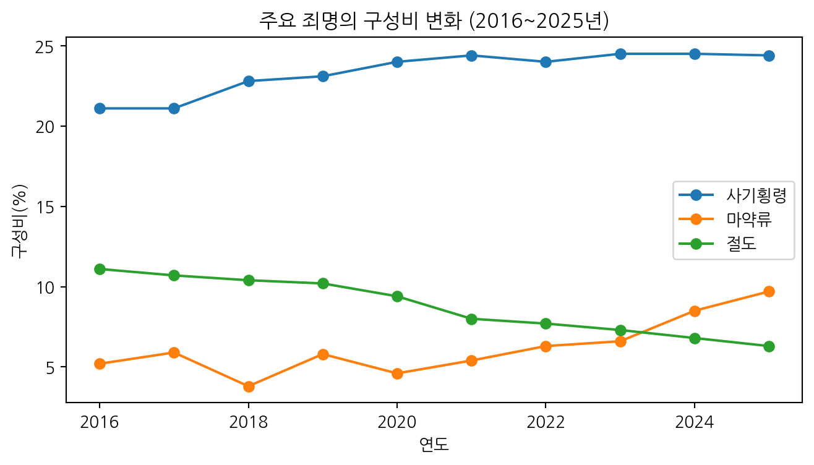
죄명별 증가율
6.4절의 증가율 함수를 반복문으로 죄명마다 부르고, 결과를 표로 모읍니다.
결과 = []
for 이름 in 죄명목록:
결과.append({
"죄명": 이름,
"2016년": 죄명[이름].iloc[0],
"2025년": 죄명[이름].iloc[-1],
"증가율": 증가율(죄명[이름].iloc[0], 죄명[이름].iloc[-1]),
})
증감 = pd.DataFrame(결과).sort_values("증가율")
증감| 죄명 | 2016년 | 2025년 | 증가율 | |
|---|---|---|---|---|
| 6 | 강도 | 2552 | 1440 | -43.6 |
| 0 | 절도 | 4061 | 2727 | -32.8 |
| 7 | 살인 | 3584 | 3063 | -14.5 |
| 1 | 폭력행위등처벌법 | 2815 | 2557 | -9.2 |
| 3 | 성폭력 | 5953 | 6021 | 1.1 |
| 2 | 사기횡령 | 7699 | 10493 | 36.3 |
| 8 | 기타 | 6234 | 9283 | 48.9 |
| 5 | 과실범 | 1691 | 3302 | 95.3 |
| 4 | 마약류 | 1890 | 4188 | 121.6 |
결과에는 죄명마다 딕셔너리가 하나씩 쌓입니다. pd.DataFrame(결과)는 딕셔너리 하나를 표의 한 행으로 바꿔 표를 만듭니다(1장 1.7절: 표의 한 행은 딕셔너리 하나).
plt.figure(figsize=(7, 4))
plt.barh(증감["죄명"], 증감["증가율"])
plt.axvline(0, color="gray")
plt.title("수형자 죄명별 인원 증가율 (2016년 대비 2025년)")
plt.xlabel("증가율(%)")
plt.show()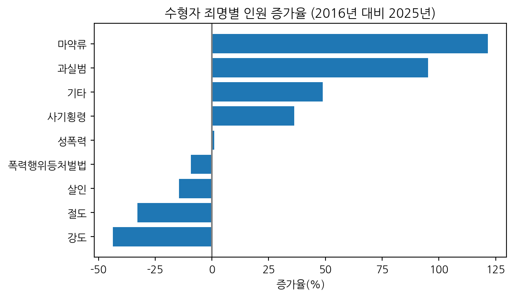
마약류(121.6%)와 과실범(95.3%)이 크게 늘었고, 강도(-43.6%)와 절도(-32.8%)는 줄었습니다. 사기·횡령은 36.3% 늘어 2025년 구성비가 24.4%로 가장 큽니다.
죄명별 표의 ‘계’(2025년 43,074명)는 6.3절의 1일 평균 수용인원에 들어 있는 수형자 수(2025년 40,564명, 표Ⅱ-1)와 다릅니다. 두 표의 집계 기준이 다른 것으로 보이며 연보에 기준이 따로 적혀 있지 않습니다. 그래서 이 절에서는 인원보다 구성비와 증가율로 비교했습니다.
6.6 고령 수형자
연령["60세이상_비중"] = (연령["60세이상"] / 연령["계"] * 100).round(1)
연령[["연도", "60세이상", "60세이상_비중"]]| 연도 | 60세이상 | 60세이상_비중 | |
|---|---|---|---|
| 0 | 2016 | 3841 | 10.5 |
| 1 | 2017 | 4243 | 11.7 |
| 2 | 2018 | 4440 | 12.6 |
| 3 | 2019 | 4802 | 13.8 |
| 4 | 2020 | 5178 | 14.9 |
| 5 | 2021 | 5291 | 15.5 |
| 6 | 2022 | 5770 | 16.7 |
| 7 | 2023 | 6504 | 17.1 |
| 8 | 2024 | 7148 | 17.5 |
| 9 | 2025 | 7789 | 18.1 |
plt.figure(figsize=(7, 4))
plt.bar(연령["연도"], 연령["60세이상_비중"])
plt.title("수형자 중 60세 이상 비중")
plt.xlabel("연도")
plt.ylabel("비중(%)")
plt.show()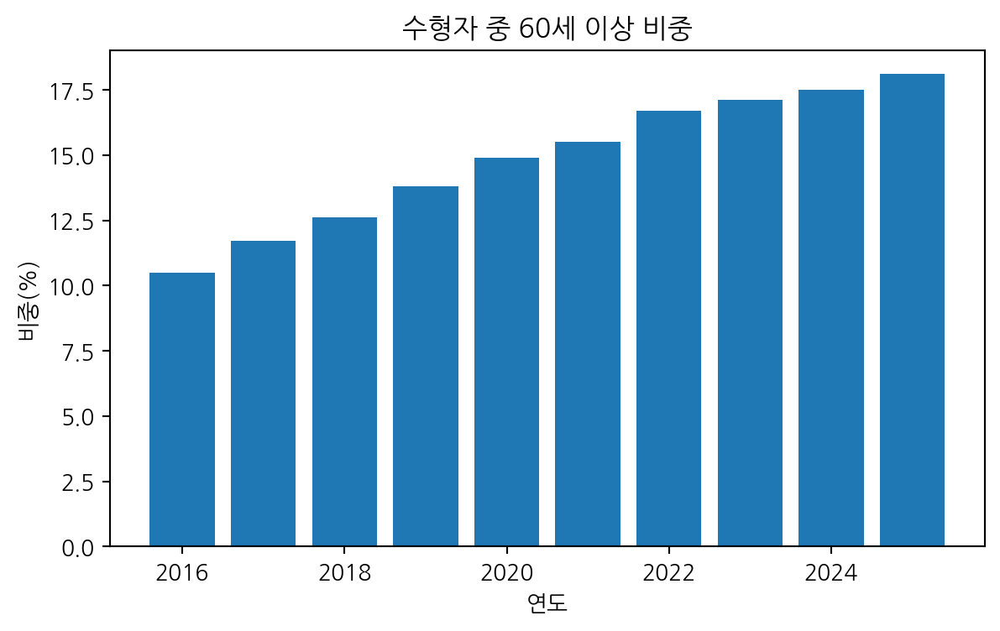
print("60세 이상 수형자 증가율:", 증가율(연령["60세이상"].iloc[0], 연령["60세이상"].iloc[-1]), "%")60세 이상 수형자 증가율: 102.8 %60세 이상 수형자는 2016년 3,841명에서 2025년 7,789명으로 두 배 넘게 늘었고, 비중은 10.5%에서 18.1%가 되었습니다.
연령대별 추이
6.5절의 구성비 그래프처럼 반복문으로 연령대마다 선을 하나씩 그립니다.
연령대목록 = ["20세미만", "20대", "30대", "40대", "50대", "60세이상"]
plt.figure(figsize=(8, 4))
for 이름 in 연령대목록:
plt.plot(연령["연도"], 연령[이름], marker="o", label=이름)
plt.title("수형자 연령대별 인원 (2016~2025년)")
plt.xlabel("연도")
plt.ylabel("인원(명)")
plt.legend(bbox_to_anchor=(1.02, 1), loc="upper left")
plt.show()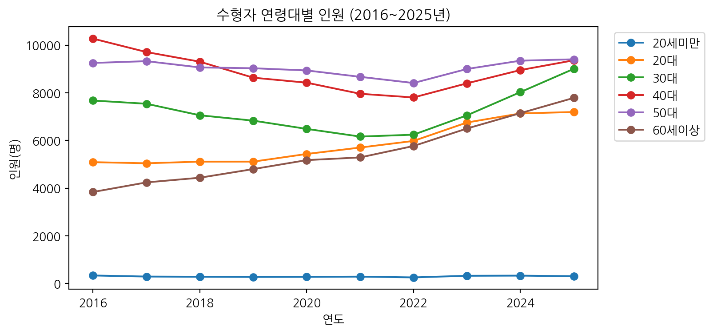
60세 이상은 꾸준히 늘어 2024년부터는 20대보다 많아졌습니다(2025년 60세 이상 7,789명, 20대 7,197명).
6.7 seaborn 히트맵으로 한눈에 보기
3장 3.7절의 seaborn 히트맵으로 6.5절의 죄명 구성비 표 전체를 한 장의 그림에 담아 봅니다.
import seaborn as sns
sns.set_theme(style="whitegrid", font="NanumGothic", rc={"axes.unicode_minus": False})
경고노트북마다 글꼴 설정을 다시
Colab 노트북은 장마다 따로 실행되므로, 이 노트북에서도 6.2절의 글꼴 설정과 위의 font="NanumGothic"이 모두 필요합니다.
plt.figure(figsize=(9, 5))
sns.heatmap(구성비.set_index("연도"), annot=True, fmt=".1f", cmap="YlOrRd")
plt.title("수형자 죄명 구성비 (2016~2025년, 단위: %)")
plt.xlabel("")
plt.ylabel("연도")
plt.yticks(rotation=0) # 세로로 선 연도 글자를 가로로 눕힘
plt.show()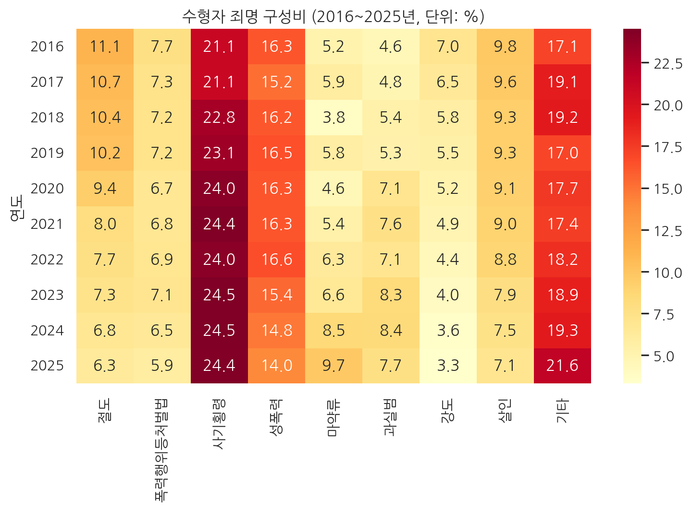
| 코드 | 하는 일 |
|---|---|
구성비.set_index("연도") |
연도 열을 행 이름으로 옮김. 그대로 두면 연도도 색칠할 값으로 들어감 |
annot=True |
칸마다 숫자를 적음 (3장 상관계수 히트맵과 같음) |
fmt=".1f" |
칸의 숫자를 소수점 한 자리까지 |
cmap="YlOrRd" |
값이 클수록 노랑에서 빨강으로 |
plt.yticks(rotation=0) |
세로축 눈금 글자의 기울기를 0도로 (히트맵은 세로축 글자를 세워서 적음) |
6.5절에서 출력한 구성비 표가 모양 그대로 색칠됩니다. 사기·횡령 열이 가장 진하고, 마약류 열은 아래(최근)로 갈수록 진해지며, 절도와 강도 열은 옅어지는 것이 한눈에 보입니다.
노트색 기준은 표 전체에 하나입니다
히트맵은 표 전체에서 하나의 색 기준을 씁니다. 사기·횡령처럼 큰 값이 있으면 다른 죄명의 변화는 상대적으로 옅게 보입니다. 죄명마다의 변화만 보고 싶으면 6.5절의 증가율 그래프가 더 알맞습니다.
6.8 연보 도표 따라 그리기
연보에는 표마다 도표가 함께 실려 있습니다. 같은 자료로 연보와 비슷한 모양의 그래프를 만들어 봅니다. 보고서에 넣을 그래프를 기관 양식에 맞춰 그릴 때 쓰는 방법들입니다. 3장 3.2절의 ax 방식(fig, ax = plt.subplots())으로 그립니다.
노트원본 도표의 출처
이 절의 원본 도표 그림은 『2026 교정통계연보』 39쪽, 109쪽, 121쪽에서 전재하였습니다.
준비: 색과 공통 모양을 함수로
sns.set_theme(style="white", font="NanumGothic", rc={"axes.unicode_minus": False})
# 연보 도표에서 뽑은 색
보라, 진보라, 주황, 회색, 하늘 = "#8864B9", "#633B9F", "#F68624", "#9BA1A2", "#4FC3F7"
def 연보스타일(ax, 제목, 단위="명"):
sns.despine(ax=ax, left=True) # 위, 오른쪽, 왼쪽 테두리 지우기
ax.grid(axis="y", linestyle=":", color="gray") # 가로 점선 눈금선
ax.set_title(제목, loc="left") # 제목을 왼쪽에
ax.set_ylabel(f"단위: {단위}")그래프마다 반복되는 모양(테두리, 점선 눈금, 제목 위치, 단위)을 함수 하나로 묶었습니다. 1장 1.9절처럼 함수로 만들어 두면 모든 그래프를 같은 양식으로 맞출 수 있습니다. sns.despine()은 그래프 테두리를 지우는 함수로, 기본으로 위와 오른쪽을 지우고 left=True를 주면 왼쪽도 지웁니다.
도표Ⅰ-23: 막대 위에 숫자 적기
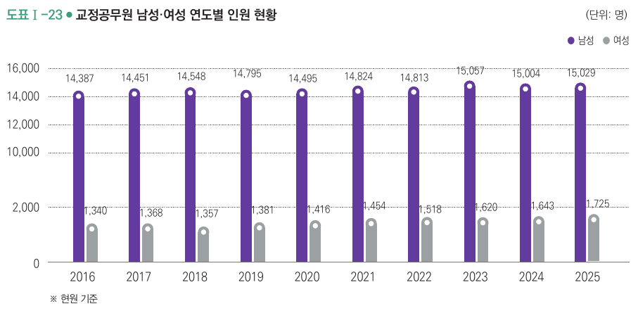
폭 = 0.3
fig, ax = plt.subplots(figsize=(9, 4))
남 = ax.bar(직원["연도"] - 폭 / 2, 직원["남성현원"], 폭, color=진보라, label="남성")
여 = ax.bar(직원["연도"] + 폭 / 2, 직원["여성현원"], 폭, color=회색, label="여성")
ax.bar_label(남, fmt="{:,.0f}", fontsize=8)
ax.bar_label(여, fmt="{:,.0f}", fontsize=8)
ax.set_xticks(직원["연도"])
ax.set_ylim(0, 18000) # 막대 위 숫자와 범례 자리
ax.legend(loc="upper right", ncol=2)
연보스타일(ax, "교정공무원 남성·여성 연도별 인원 현황")
plt.show()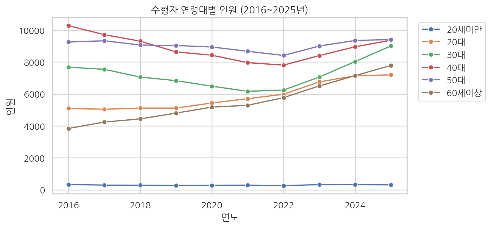
| 코드 | 하는 일 |
|---|---|
직원["연도"] - 폭 / 2 |
연도 위치에서 막대 반 개만큼 왼쪽. 열 전체가 한 번에 계산됨(2장 2.6절) |
ax.bar(x, 높이, 폭, ...) |
세 번째 값이 막대 폭. 두 막대를 연도 양옆에 나란히 놓음 |
남 = ax.bar(...) |
그린 막대 묶음을 이름으로 받아 둠 |
ax.bar_label(남, fmt="{:,.0f}") |
그 막대 끝에 값을 적음. {:,.0f}는 세 자리마다 쉼표, 소수점 없이 |
ax.set_xticks(직원["연도"]) |
모든 연도에 눈금을 둠 |
경고원본은 세로축을 중간에서 끊었습니다
원본 도표Ⅰ-23의 세로축은 2,000 다음이 바로 10,000입니다. 남성 막대의 아래쪽을 잘라 그렸기 때문에 남성(15,029명)과 여성(1,725명)의 차이(약 8.7배)가 실제보다 작아 보입니다. 위 그래프는 0부터 끊지 않고 그렸습니다. 축을 끊으면 그래프가 보기 좋아지는 대신 크기 비교가 틀어지므로, 보고서에서 축을 끊을 때는 끊었다는 표시를 분명히 해야 합니다.
도표Ⅱ-25: 막대와 꺾은선을 한 그래프에
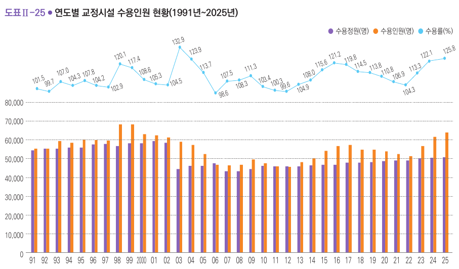
인원(명)과 수용률(%)은 단위가 달라 세로축 하나로는 함께 그릴 수 없습니다. twinx()로 같은 가로축을 쓰는 두 번째 세로축을 만들어 꺾은선을 그립니다.
폭 = 0.38
fig, ax1 = plt.subplots(figsize=(11, 5))
ax1.bar(수용["연도"] - 폭 / 2, 수용["수용정원"], 폭, color=보라, label="수용정원(명)")
ax1.bar(수용["연도"] + 폭 / 2, 수용["1일평균수용인원"], 폭, color=주황, label="수용인원(명)")
ax1.set_ylim(0, 125000) # 막대 칸의 위쪽을 비워 꺾은선 자리를 만듦
ax1.set_yticks([0, 20000, 40000, 60000, 80000]) # 눈금은 막대가 있는 높이까지만
ax2 = ax1.twinx() # 두 번째 세로축
ax2.plot(수용["연도"], 수용["수용률"], color=하늘, marker="o", label="수용률(%)")
for 연도, 값 in zip(수용["연도"], 수용["수용률"]):
ax2.text(연도, 값 + 3, str(값), ha="center", fontsize=7) # 점 위에 값 적기
ax2.set_ylim(28, 142) # 꺾은선을 위쪽에 둠
ax2.axis("off") # 두 번째 세로축의 눈금은 숨김 (원본처럼)
연보스타일(ax1, "연도별 교정시설 수용인원 현황(1991년~2025년)")
fig.legend(loc="upper right", ncol=3)
plt.show()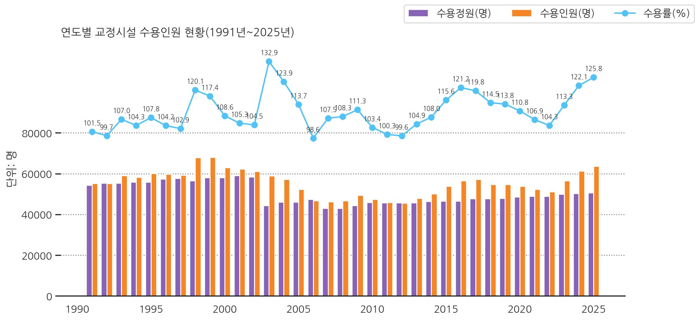
| 코드 | 하는 일 |
|---|---|
ax2 = ax1.twinx() |
가로축은 같고 세로축이 다른 두 번째 그래프 칸 |
ax1.set_ylim(0, 125000) |
막대 칸의 위쪽을 비워 둠. 막대가 아래 60%쯤만 차지함 |
ax1.set_yticks([...]) |
왼쪽 눈금을 8만까지만 적어, 위쪽 꺾은선 자리에 인원 눈금이 겹치지 않게 함 |
ax2.set_ylim(28, 142) |
수용률이 그래프 위쪽에 오도록 범위를 정함 |
ax2.text(연도, 값 + 3, str(값)) |
점보다 조금 위에 수용률을 적음. 반복문으로 35개 점마다 |
ax2.axis("off") |
두 번째 칸의 눈금과 테두리를 숨김 |
fig.legend(..., ncol=3) |
그림판 전체에 범례 하나. 두 칸(ax1, ax2)의 항목을 모아 3열로 적음 |
힌트두 세로축 그래프를 읽을 때
두 세로축 그래프는 범위를 어떻게 정하느냐에 따라 두 선이 겹치거나 떨어져 보입니다. 원본처럼 오른쪽 눈금을 숨기고 점마다 값을 적어 두면, 읽는 사람이 눈금을 잘못 읽을 일이 줄어듭니다.
도표Ⅱ-12: 가운데에 합계가 있는 도넛 그래프
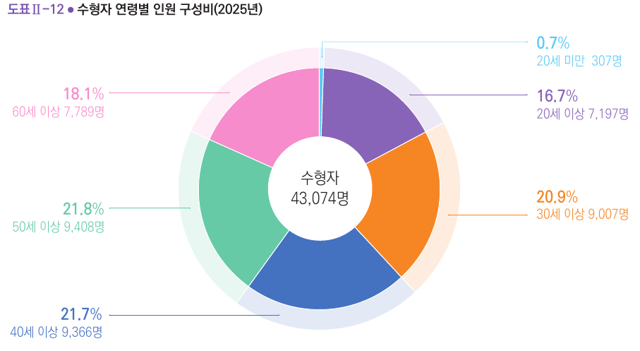
최근 = 연령.iloc[-1] # 마지막 행 = 2025년
값 = []
이름표 = []
for 이름 in 연령대목록:
값.append(최근[이름])
이름표.append(이름 + "\n" + str(round(최근[이름] / 최근["계"] * 100, 1)) + "%")
색 = ["#59CAF5", 보라, 주황, "#4472C1", "#66CAA6", "#F68CCB"]
fig, ax = plt.subplots(figsize=(6, 6))
ax.pie(값, labels=이름표, colors=색, startangle=90, counterclock=False,
wedgeprops={"width": 0.45, "edgecolor": "white"})
ax.text(0, 0, f"수형자\n{int(최근['계']):,}명", ha="center", va="center", fontsize=14)
ax.set_title("수형자 연령별 인원 구성비(2025년)", loc="left")
plt.show()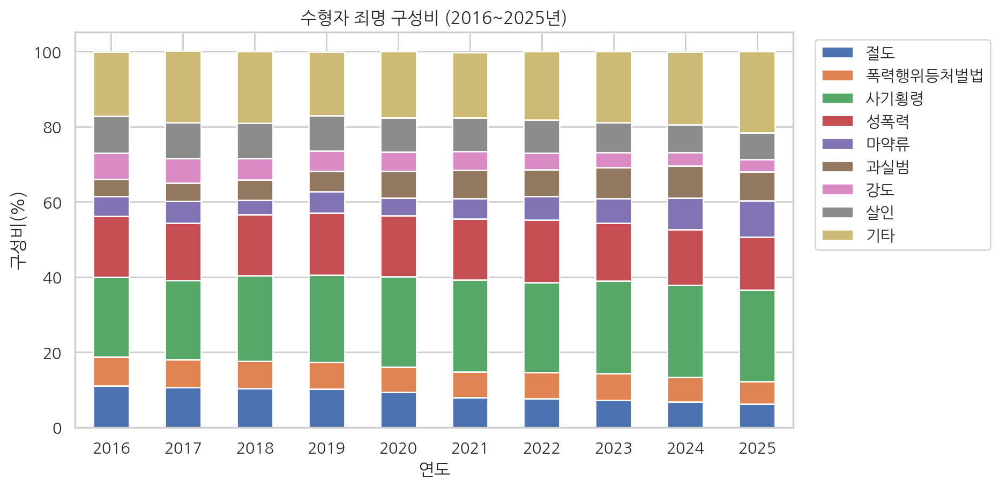
| 코드 | 하는 일 |
|---|---|
반복문과 append |
연령대마다 값과 이름표(“30대” 줄바꿈 “20.9%”)를 리스트에 차례로 담음(1장 1.8절) |
ax.pie(값, labels=이름표, ...) |
원그래프. 조각마다 이름표를 붙임 |
startangle=90, counterclock=False |
12시 방향에서 시계 방향으로 (원본과 같은 순서) |
wedgeprops={"width": 0.45} |
조각 두께를 줄여 가운데가 빈 도넛 모양으로 |
ax.text(0, 0, ...) |
원의 가운데(0, 0)에 합계를 적음. {...:,}는 세 자리마다 쉼표 |
int(최근['계']) |
6.6절에서 비중(소수) 열을 더한 뒤로 한 행을 꺼내면 모든 값이 소수(43074.0)가 되므로 정수로 바꿈(1장 1.5절) |
노트도넛 그래프와 막대그래프
도넛(원) 그래프는 전체에서 차지하는 몫을 보여주기 좋지만, 30대(20.9%), 40대(21.7%), 50대(21.8%)처럼 비슷한 조각은 눈으로 크기를 구분하기 어렵습니다. 그래서 원본처럼 조각마다 숫자를 함께 적습니다. 항목끼리의 크기 비교가 목적이면 막대그래프가 더 정확하게 읽힙니다.
6.9 AI와 함께 해보기
5장의 방법으로 AI에게 코드를 받아 해결하고, 받은 코드를 한 줄씩 묻고 결과를 확인하세요. 정답 보기에는 확인용 코드가 있습니다.
- 죄명 구성비를 연도별 100% 누적 막대그래프로 그려 달라고 요청하세요. 막대 하나의 높이가 100이 되는지 확인합니다.
# AI에게 받은 코드를 붙여 넣어 실행해 보세요정답 보기
구성비.set_index("연도")[죄명목록].plot(kind="bar", stacked=True, figsize=(9, 5), rot=0)
plt.title("수형자 죄명 구성비 (2016~2025년)")
plt.ylabel("구성비(%)")
plt.legend(bbox_to_anchor=(1.02, 1), loc="upper left")
plt.show()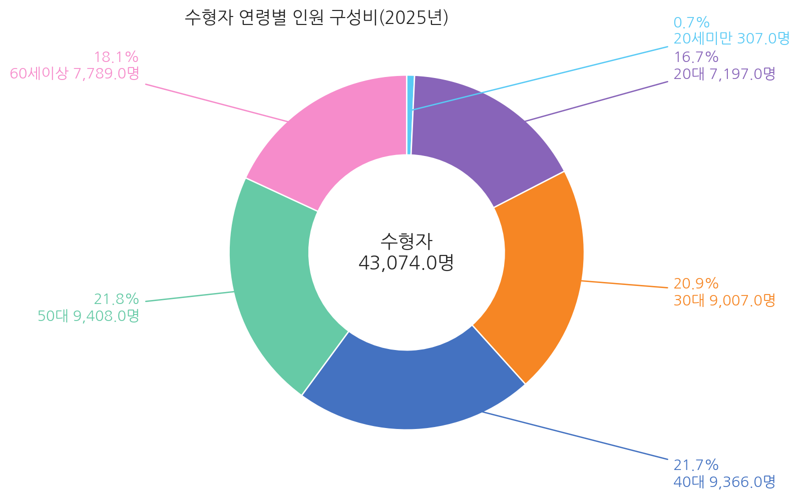
print(구성비[죄명목록].sum(axis=1).round(1).tolist())[99.9, 100.2, 100.1, 99.9, 100.1, 99.8, 100.0, 100.0, 99.9, 100.0]반올림한 구성비를 더하면 해마다 99.8에서 100.2 사이로 나옵니다. 연보 일러두기에도 구성비의 합이 반올림 때문에 100%가 되지 않을 수 있다는 설명이 있습니다.
- 6.3절의 수용률 그래프에 2003년 위치에 세로선을 긋고 “수용면적 기준 변경”이라는 글자를 넣어 달라고 요청하세요.
# AI에게 받은 코드를 붙여 넣어 실행해 보세요정답 보기
plt.figure(figsize=(8, 4))
plt.plot(수용["연도"], 수용["수용률"], marker="o")
plt.axhline(100, color="gray", linestyle="--")
plt.axvline(2003, color="gray", linestyle=":")
plt.annotate("수용면적 기준 변경", xy=(2003, 132.9), xytext=(2006, 128),
arrowprops=dict(arrowstyle="->"))
plt.title("교정시설 수용률 (1991~2025년)")
plt.ylabel("수용률(%)")
plt.show()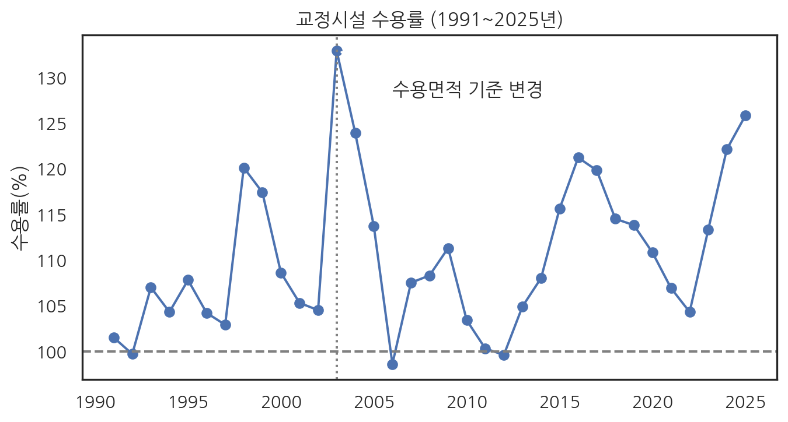
- 시작 연도, 끝 연도, 열 이름 목록을 넣으면 열마다 증가율을 표로 돌려주는 함수를 만들어 달라고 요청하세요(5.9절 과제 5의 함수 요청문 활용). 2016년, 2025년으로 넣었을 때 6.5절의 증가율과 같은지 확인한 뒤, 2021년과 2025년을 비교해 보세요.
# AI에게 받은 함수를 붙여 넣어 실행해 보세요정답 보기
def 기간증가율(표, 시작연도, 끝연도, 열목록):
시작 = 표[표["연도"] == 시작연도].iloc[0]
끝 = 표[표["연도"] == 끝연도].iloc[0]
결과 = []
for 열 in 열목록:
결과.append({"항목": 열, "시작": 시작[열], "끝": 끝[열], "증가율": 증가율(시작[열], 끝[열])})
return pd.DataFrame(결과)
기간증가율(죄명, 2021, 2025, 죄명목록)| 항목 | 시작 | 끝 | 증가율 | |
|---|---|---|---|---|
| 0 | 절도 | 2744 | 2727 | -0.6 |
| 1 | 폭력행위등처벌법 | 2325 | 2557 | 10.0 |
| 2 | 사기횡령 | 8323 | 10493 | 26.1 |
| 3 | 성폭력 | 5572 | 6021 | 8.1 |
| 4 | 마약류 | 1849 | 4188 | 126.5 |
| 5 | 과실범 | 2590 | 3302 | 27.5 |
| 6 | 강도 | 1683 | 1440 | -14.4 |
| 7 | 살인 | 3063 | 3063 | 0.0 |
| 8 | 기타 | 5938 | 9283 | 56.3 |
- 이 장의 결과를 바탕으로 AI에게 “교정시설 현황 요약” 다섯 문장을 써 달라고 요청하세요. 받은 문장의 숫자를 아래 값과 하나씩 대조합니다.
| 항목 | 값 | 확인한 곳 |
|---|---|---|
| 2025년 수용률 | 125.8% | 6.3절 |
| 2016년 대비 1일 평균 수용인원 증가율 | 12.7% | 6.4절 |
| 2025년 교정공무원 1인당 수용인원 | 3.80명 | 6.4절 |
| 2016년 대비 마약류 수형자 증가율 | 121.6% | 6.5절 |
| 2025년 60세 이상 수형자 비중 | 18.1% | 6.6절 |
- 연보 111쪽 도표Ⅱ-14처럼 2025년 죄명별 구성비를 크기가 다른 원(버블)으로 그려 달라고 요청하세요. 원본 그림을 설명하거나, AI가 그림을 읽을 수 있으면 캡처를 함께 주면 됩니다. 원을 겹치지 않게 배치하는 부분은 직접 짜기 어려우므로 AI가 어떤 도구를 쓰는지, 그 도구를 설치하는 줄이 무엇인지 물어보세요.
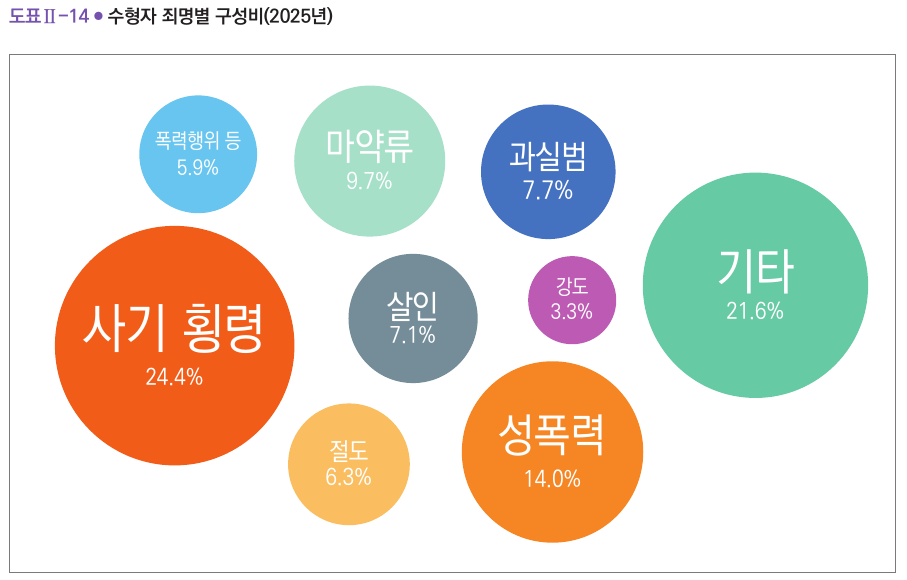
# AI에게 받은 코드를 붙여 넣어 실행해 보세요정답 보기
circlify라는 도구가 원의 위치와 크기를 계산해 줍니다. Colab에는 설치되어 있지 않아 먼저 설치합니다.
%pip install -q circlifyNote: you may need to restart the kernel to use updated packages.import circlify
최근죄명 = 죄명[죄명["연도"] == 2025].iloc[0]
표시이름 = {"폭력행위등처벌법": "폭력행위 등", "사기횡령": "사기·횡령"}
자료 = [{"id": c, "datum": 최근죄명[c] / 최근죄명["계"] * 100} for c in 죄명목록]
원들 = circlify.circlify(자료, show_enclosure=False)
팔레트 = dict(zip(죄명목록, ["#FBBF5E", "#6DC6F0", "#F25C19", "#F68624", "#A6E0CA",
"#4472C1", "#C455B4", "#7A8B94", "#66CAA6"]))
fig, ax = plt.subplots(figsize=(7, 7))
ax.axis("off")
끝 = max(max(abs(c.x) + c.r, abs(c.y) + c.r) for c in 원들)
ax.set_xlim(-끝, 끝)
ax.set_ylim(-끝, 끝)
for c in 원들:
이름, 비율 = c.ex["id"], c.ex["datum"]
ax.add_patch(plt.Circle((c.x, c.y), c.r * 0.95, color=팔레트[이름]))
ax.text(c.x, c.y, f"{표시이름.get(이름, 이름)}\n{비율:.1f}%", ha="center", va="center",
color="white", fontsize=8 + c.r * 22)
ax.set_title("수형자 죄명별 구성비(2025년)", loc="left", fontsize=13)
plt.show()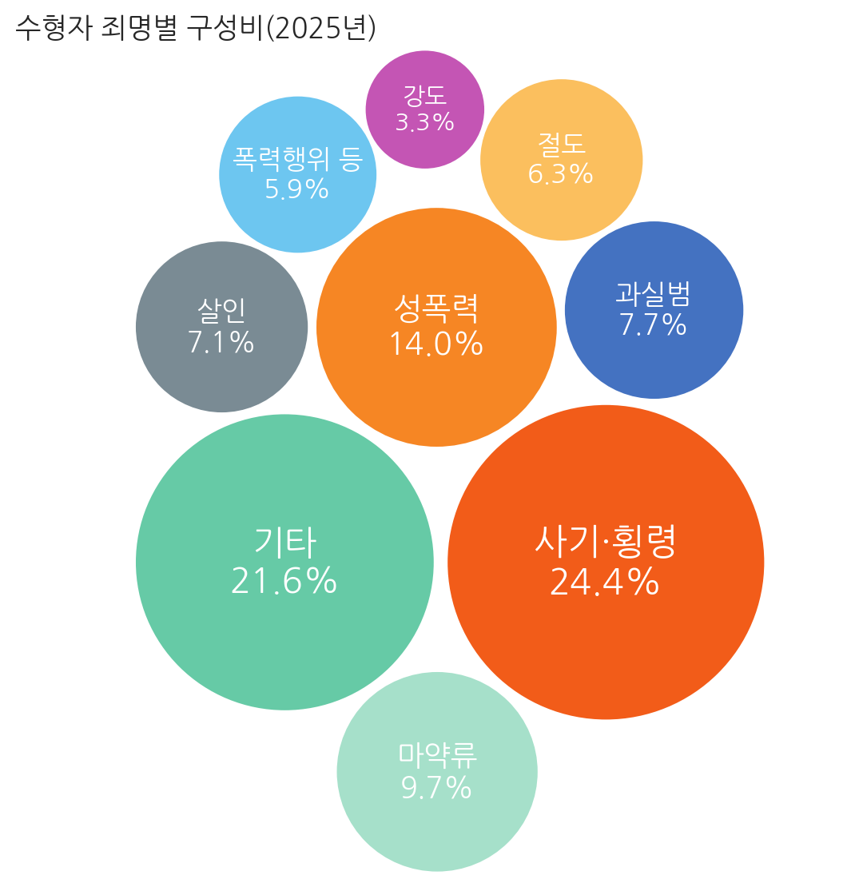
원의 넓이가 구성비에 비례합니다. 원의 배치는 계산할 때마다 같지만 원본과는 다를 수 있습니다.